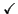

The code provided here originally demonstrated the main algorithms from Rasmussen and Williams: Gaussian Processes for Machine Learning. It has since grown to allow more likelihood functions, further inference methods and a flexible framework for specifying GPs. Other GP packages can be found here.
The code is written by Carl Edward Rasmussen and Hannes Nickisch; it runs on both Octave 3.2.x and Matlab® 7.x and later. The code is based on previous versions written by Carl Edward Rasmussen and Chris Williams.
All the code including demonstrations and html documentation can be downloaded in a tar or zip archive file.
Minor changes and incremental bugfixes to the current version are documented in the changelog, changes from previous versions are documented in README.
Please read the copyright notice.
After unpacking the tar or zip file you will find 7 subdirectories: cov, doc, inf, lik, mean, prior and util. It is not necessary to install anything to get started, just run the startup script to set your path.
Details about the directory contents and on how to compile mex files can be found in the README. The getting started guide is the remainder of the html file you are currently reading (also available at http://gaussianprocess.org/gpml/code/matlab/doc). A Developer's Guide containing technical documentation is found in manual.pdf, but for the casual user, the guide is below.
Gaussian Processes (GPs) can conveniently be used for Bayesian supervised learning, such as regression and classification. In its simplest form, GP inference can be implemented in a few lines of code. However, in practice, things typically get a little more complicated: you might want to use complicated covariance functions and mean functions, learn good values for hyperparameters, use non-Gaussian likelihood functions (rendering exact inference intractable), use approximate inference algorithms, or combinations of many or all of the above. This is what the GPML software package does.
Before going straight to the examples, just a brief note about the organization of the package. There are four types of objects which you need to know about:
| Plain Regression Likelihoods | ||||||||||
| Inference | GPML name | Exact infExact |
EP infEP |
Laplace infLaplace |
Variational Bayes infVB |
Kullback Leibler infKL |
Sampling infMCMC |
LOO infLOO |
type, output domain |
alternative names |
| Likelihood | FITC infFITC |
FITC-EP infFITC_EP |
FITC-Laplace infFITC_Laplace |
|||||||
| Grid infGrid |
||||||||||
| Gaussian | likGauss |  | regression, IR | |||||||
| Warped Gaussian | likGaussWarp | regression, IR | ||||||||
| Gumbel | likGumbel | regression, IR | extremal value regression | |||||||
| Sech squared | likSech2 | regression, IR | logistic distribution | |||||||
| Laplacian | likLaplace | regression, IR | double exponential | |||||||
| Student's t | likT | regression, IR | ||||||||
| Composite Likelihoods | ||||||||||
| Inference | GPML name | Exact infExact |
EP infEP |
Laplace infLaplace |
Variational Bayes infVB |
Kullback Leibler infKL |
Sampling infMCMC |
LOO infLOO |
type, output domain |
alternative names |
| Likelihood | FITC infFITC |
FITC-EP infFITC_EP |
FITC-Laplace infFITC_Laplace |
|||||||
| Grid infGrid |
||||||||||
| Mixture | likMix | classification, ±1 and regression, IR | mixing meta likelihood | |||||||
| Classification Likelihoods | ||||||||||
| Inference | GPML name | Exact infExact |
EP infEP |
Laplace infLaplace |
Variational Bayes infVB |
Kullback Leibler infKL |
Sampling infMCMC |
LOO infLOO |
type, output domain |
alternative names |
| Likelihood | FITC infFITC |
FITC-EP infFITC_EP |
FITC-Laplace infFITC_Laplace |
|||||||
| Grid infGrid |
||||||||||
| Uniform | likUni | classification, ±1 | label noise | |||||||
| Error function | likErf | classification, ±1 | probit regression | |||||||
| Logistic function | likLogistic | classification, ±1 | logistic regression logit regression |
|||||||
| Generalized Linear Model Likelihoods | ||||||||||
| Inference | GPML name | Exact infExact |
EP infEP |
Laplace infLaplace |
Variational Bayes infVB |
Kullback Leibler infKL |
Sampling infMCMC |
LOO infLOO |
type, output domain |
alternative names |
| Likelihood | FITC infFITC |
FITC-EP infFITC_EP |
FITC-Laplace infFITC_Laplace |
|||||||
| Grid infGrid |
||||||||||
| Weibull | likWeibull | positive data, IR+\{0} | nonnegative regression | |||||||
| Gamma | likGamma | positive data, IR+\{0} | nonnegative regression | |||||||
| Exponential | likExp | positive data, IR+\{0} | nonnegative regression | |||||||
| Inverse Gaussian | likInvGauss | positive data, IR+\{0} | nonnegative regression | |||||||
| Poisson | likPoisson | ()* | count data, IN | Poisson regression | ||||||
| Beta | likBeta | interval data, [0,1] | range regression | |||||||
* EP might not converge in some cases since quadrature is used.
All of the objects described above are written in a modular way, so you can add functionality if you feel constrained despite the considerable flexibility provided. Details about how to do this are provided in the developer documentation.
Inference by MCMC sampling is the only inference method that cannot be used as a black box. Also gradient-based marginal likelihood optimisation is not possible with MCMC. Please see usageSampling for a toy example illustrating the usage of the implemented samplers.
Using the GPML package is simple. There is only one single function to call: gp, it does posterior inference, learns hyperparameters, computes the marginal likelihood and makes predictions. Generally, the gp function takes the following arguments: a hyperparameter struct, an inference method, a mean function, a covariance function, a likelihood function, training inputs, training targets, and possibly test cases. The exact computations done by the function is controlled by the number of input and output arguments in the call. Here is part of the help message for the gp function (follow the link to see the whole thing):
function [varargout] = gp(hyp, inf, mean, cov, lik, x, y, xs, ys)
[ ... snip ...]
Two modes are possible: training or prediction: if no test cases are
supplied, then the negative log marginal likelihood and its partial
derivatives wrt the hyperparameters is computed; this mode is used to fit the
hyperparameters. If test cases are given, then the test set predictive
probabilities are returned. Usage:
training: [nlZ dnlZ ] = gp(hyp, inf, mean, cov, lik, x, y);
prediction: [ymu ys2 fmu fs2 ] = gp(hyp, inf, mean, cov, lik, x, y, xs);
or: [ymu ys2 fmu fs2 lp] = gp(hyp, inf, mean, cov, lik, x, y, xs, ys);
[ .. snip ...]
Here x and y are training inputs and outputs, and xs and ys are test set inputs and outputs, nlZ is the negative log marginal likelihood and dnlZ its partial derivatives wrt the hyperparameters (which are used for training the hyperparameters). The prediction outputs are ymu and ys2 for test output mean and covariance, and fmu and fs2 are the equivalent quenteties for the corresponding latent variables. Finally, lp are the test output log probabilities.
Instead of exhaustively explaining all the possibilities, we will give two illustrative examples to give you the idea; one for regression and one for classification. You can either follow the example here on this page, or using the two scripts demoRegression and demoClassification (using the scripts, you still need to follow the explanation on this page).
You can either follow the example here on this page, or use the script demoRegression.
This is a simple example, where we first generate n=20 data points from a GP, where the inputs are scalar (so that it is easy to plot what is going on). We then use various other GPs to make inferences about the underlying function.
First, generate some data from a Gaussian process (it is not essential to understand the details of this):
clear all, close all
meanfunc = {@meanSum, {@meanLinear, @meanConst}}; hyp.mean = [0.5; 1];
covfunc = {@covMaterniso, 3}; ell = 1/4; sf = 1; hyp.cov = log([ell; sf]);
likfunc = @likGauss; sn = 0.1; hyp.lik = log(sn);
n = 20;
x = gpml_randn(0.3, n, 1);
K = feval(covfunc{:}, hyp.cov, x);
mu = feval(meanfunc{:}, hyp.mean, x);
y = chol(K)'*gpml_randn(0.15, n, 1) + mu + exp(hyp.lik)*gpml_randn(0.2, n, 1);
plot(x, y, '+')
Above, we first specify the mean function meanfunc, covariance function covfunc of a GP and a likelihood function, likfunc. The corresponding hyperparameters are specified in the hyp structure:
The mean function is composite, adding (using meanSum function) a linear (meanLinear) and a constant (meanConst) to get an affine function. Note, how the different components are composed using cell arrays. The hyperparameters for the mean are given in hyp.mean and consists of a single (because the input will one dimensional, i.e. D=1) slope (set to 0.5) and an off-set (set to 1). The number and the order of these hyperparameters conform to the mean function specification. You can find out how many hyperparameters a mean (or covariance or likelihood function) expects by calling it without arguments, such as feval(meanfunc{:}). For more information on mean functions see meanFunctions and the directory mean/.
The covariance function is of the Matérn form with isotropic distance measure covMaterniso. This covariance function is also composite, as it takes a constant (related to the smoothness of the GP), which in this case is set to 3. The covariance function takes two hyperparameters, a characteristic length-scale ell and the standard deviation of the signal sf. Note, that these positive parameters are represented in hyp.cov using their logarithms. For more information on covariance functions see covFunctions and cov/.
Finally, the likelihood function is specified to be Gaussian. The standard deviation of the noise sn is set to 0.1. Again, the representation in the hyp.lik is given in terms of its logarithm. For more information about likelihood functions, see likFunctions and lik/.
Then, we generate a dataset with n=20 examples. The inputs x are drawn from a unit Gaussian (using the gpml_randn utility, which generates unit Gaussian pseudo random numbers with a specified seed). We then evaluate the covariance matrix K and the mean vector m by calling the corresponding functions with the hyperparameters and the input locations x. Finally, the targets y are computed by drawing randomly from a Gaussian with the desired covariance and mean and adding Gaussian noise with standard deviation exp(hyp.lik). The above code is a bit special because we explicitly call the mean and covariance functions (in order to generate samples from a GP); ordinarily, we would only directly call the gp function.
Let's ask the model to compute the (joint) negative log probability (density) nlml (also called marginal likelihood or evidence) and to generalize from the training data to other (test) inputs z:
nlml = gp(hyp, @infExact, meanfunc, covfunc, likfunc, x, y) z = linspace(-1.9, 1.9, 101)'; [m s2] = gp(hyp, @infExact, meanfunc, covfunc, likfunc, x, y, z); f = [m+2*sqrt(s2); flipdim(m-2*sqrt(s2),1)]; fill([z; flipdim(z,1)], f, [7 7 7]/8) hold on; plot(z, m); plot(x, y, '+')
The gp function is called with a struct of hyperparameters hyp, and inference method, in this case @infExact for exact inference and the mean, covariance and likelihood functions, as well as the inputs and outputs of the training data. With no test inputs, gp returns the negative log probability of the training data, in this example nlml=11.97.
To compute the predictions at test locations we add the test inputs z as a final argument, and gp returns the mean m variance s2 at the test location. The program is using algorithm 2.1 from the GPML book. Plotting the mean function plus/minus two standard deviations (corresponding to a 95% confidence interval):
Typically, we would not a priori know the values of the hyperparameters hyp, let alone the form of the mean, covariance or likelihood functions. So, let's pretend we didn't know any of this. We assume a particular structure and learn suitable hyperparameters:
covfunc = @covSEiso; hyp2.cov = [0; 0]; hyp2.lik = log(0.1); hyp2 = minimize(hyp2, @gp, -100, @infExact, [], covfunc, likfunc, x, y); exp(hyp2.lik) nlml2 = gp(hyp2, @infExact, [], covfunc, likfunc, x, y) [m s2] = gp(hyp2, @infExact, [], covfunc, likfunc, x, y, z); f = [m+2*sqrt(s2); flipdim(m-2*sqrt(s2),1)]; fill([z; flipdim(z,1)], f, [7 7 7]/8) hold on; plot(z, m); plot(x, y, '+')
First, we guess that a squared exponential covariance function covSEiso may be suitable. This covariance function takes two hyperparameters: a characteristic length-scale and a signal standard deviation (magnitude). These hyperparameters are non-negative and represented by their logarithms; thus, initializing hyp2.cov to zero, correspond to unit characteristic length-scale and unit signal standard deviation. The likelihood hyperparameter in hyp2.lik is also initialized. We assume that the mean function is zero, so we simply ignore it (and when in the following we call gp, we give an empty argument for the mean function).
In the following line, we optimize over the hyperparameters, by minimizing the negative log marginal likelihood w.r.t. the hyperparameters. The third parameter in the call to minimize limits the number of function evaluations to a maximum of 100. The inferred noise standard deviation is exp(hyp2.lik)=0.15, somewhat larger than the one used to generate the data (0.1). The final negative log marginal likelihood is nlml2=14.13, showing that the joint probability (density) of the training data is about exp(14.13-11.97)=8.7 times smaller than for the setup actually generating the data. Finally, we plot the predictive distribution.
This plot shows clearly, that the model is indeed quite different from the generating process. This is due to the different specifications of both the mean and covariance functions. Below we'll try to do a better job, by allowing more flexibility in the specification.
Note that the confidence interval in this plot is the confidence for the distribution of the (noisy) data. If instead you want the confidence region for the underlying function, you should use the 3rd and 4th output arguments from gp as these refer to the latent process, rather than the data points.
hyp.cov = [0; 0]; hyp.mean = [0; 0]; hyp.lik = log(0.1); hyp = minimize(hyp, @gp, -100, @infExact, meanfunc, covfunc, likfunc, x, y); [m s2] = gp(hyp, @infExact, meanfunc, covfunc, likfunc, x, y, z); f = [m+2*sqrt(s2); flipdim(m-2*sqrt(s2),1)]; fill([z; flipdim(z,1)], f, [7 7 7]/8) hold on; plot(z, m); plot(x, y, '+');
Here, we have changed the specification by adding the affine mean function. All the hyperparameters are learnt by optimizing the marginal likelihood.
This shows that a much better fit is achieved when allowing a mean function (although the covariance function is still different from that of the generating process).
It can be usefull to put a prior distribution on (a part of) the hyperparameters. Sometimes, one may want to exclude some hyperparameters from the optimisation i.e. fix their values beforehand and treat them as constants.
In these cases, a hyperprior comes to bear. A hyperprior is specified by augmenting the inf parameter of gp.m In the regression before, we had inf = @infExact;. To put a Gaussian prior on the first mean hyperparameter hyp.mean(1) and a Laplacian prior on the second mean hyperparameter hyp.mean(2) and wished to fix the noise variance hyperparameter hyp.lik, we simple need to set up the corresponding prior structure as detailed below.
mu = 1.0; s2 = 0.01^2;
prior.mean = {{@priorGauss,mu,s2}; {'priorLaplace',mu,s2}};
prior.lik = {{@priorDelta}};
inf = {@infPrior,@infExact,prior};
hyp = minimize(hyp, @gp, -100, inf, meanfunc, covfunc, likfunc, x, y);
Further examples are provided in usagePrior.
In case the number of training inputs x exceeds a few thousands, exact inference using infExact.m takes too long. We offer the FITC approximation based on a low-rank plus diagonal approximation to the exact covariance to deal with these cases. The general idea is to use inducing points u and to base the computations on cross-covariances between training, test and inducing points only.
Using the FITC approximation is very simple, we just have to wrap the covariance function covfunc into covFITC.m and call gp.m with the inference method infFITC.m as demonstrated by the following lines of code.
nu = fix(n/2); u = linspace(-1.3,1.3,nu)';
covfuncF = {@covFITC, {covfunc}, u};
[mF s2F] = gp(hyp, @infFITC, meanfunc, covfuncF, likfunc, x, y, z);
We define equispaced inducing points u that are shown in the figure as black circles. Note that the predictive variance is overestimated outside the support of the inducing inputs. In a multivariate example where densely sampled inducing inputs are infeasible, one can simply use a random subset of the training points.
nu = fix(n/2); iu = randperm(n); iu = iu(1:nu); u = x(iu,:);
A covariance function factorising over coordinates axes leads to a covariance matrix with Kronecker structure. This can be exploited to scale GPs beyond the O(n³) limit. If there are observations for all points of the grid, all computations are exact. The example below contains the most relevant code from the script demoGrid, where we extrapolate a pixel image beyond its boundaries.
For a comprehensive set of examples and more resources, see a website by Andrew Wilson.
We start off by setting up the training data and the GP on a [-2,2]x[-3,3] lattice with 14400 pixels -- a size where a usual dens GP would be computationally infeasible. Then we wrap the covariance functions for the axes into covGrid and specify the initial values for the hyperparameters. Note that covGrid can only be used in conjunction with infGrid.
xg = {linspace(-2,2,120)',linspace(-3,3,120)'}; xe = covGrid('expand',xg);
x = (1:size(xe,1))'; y = sin(xe(:,2)) + xe(:,1) + 0.01*gpml_randn(1,size(x));
cov = {{@covSEiso},{@covSEiso}}; covg = {@covGrid,cov,xg};
hyp.cov = zeros(4,1); hyp.mean = []; hyp.lik = log(0.1);
As a next step, we perform hyperparameter optimisation as with a usual GP model. The inference method inGrid only supports likGauss, hence we can leave the field empty.
hyp = minimize(hyp,@gp,-50,@infGrid,@meanZero,covg,[],x,y);
Finally, we predict on a [-4,4]x[-6,6] lattice to see the result of the extrapolation. The figure shows on the left the training data and on the right the prediction. Note that, we also support partial observations.
xs = covGrid('expand',{linspace(-4,4,100)',linspace(-6,6,110)'});
opt.cg_maxit = 200; opt.cg_tol = 5e-3;
post = infGrid(hyp,{@meanZero},covg,'likGauss',x,y,opt); post.L = @(a) a;
ym = gp(hyp, @infGrid,[],covg,[],x,post,xs);
You can either follow the example here on this page, or use the script demoClassification.
The difference between regression and classification isn't of fundamental nature. We can use a Gaussian process latent function in essentially the same way, it is just that the Gaussian likelihood function often used for regression is inappropriate for classification. And since exact inference is only possible for Gaussian likelihood, we also need an alternative, approximate, inference method.
Here, we will demonstrate binary classification, using two partially overlapping Gaussian sources of data in two dimensions. First we generate the data:
clear all, close all n1 = 80; n2 = 40; % number of data points from each class S1 = eye(2); S2 = [1 0.95; 0.95 1]; % the two covariance matrices m1 = [0.75; 0]; m2 = [-0.75; 0]; % the two means x1 = bsxfun(@plus, chol(S1)'*gpml_randn(0.2, 2, n1), m1); x2 = bsxfun(@plus, chol(S2)'*gpml_randn(0.3, 2, n2), m2); x = [x1 x2]'; y = [-ones(1,n1) ones(1,n2)]'; plot(x1(1,:), x1(2,:), 'b+'); hold on; plot(x2(1,:), x2(2,:), 'r+');
120 data points are generated from two Gaussians with different means and covariances. One Gaussian is isotropic and contains 2/3 of the data (blue), the other is highly correlated and contains 1/3 of the points (red). Note, that the labels for the targets are ±1 (and not 0/1).
In the plot, we superimpose the data points with the posterior equi-probability contour lines for the probability of class two given complete information about the generating mechanism
[t1 t2] = meshgrid(-4:0.1:4,-4:0.1:4); t = [t1(:) t2(:)]; n = length(t); % these are the test inputs tmm = bsxfun(@minus, t, m1'); p1 = n1*exp(-sum(tmm*inv(S1).*tmm/2,2))/sqrt(det(S1)); tmm = bsxfun(@minus, t, m2'); p2 = n2*exp(-sum(tmm*inv(S2).*tmm/2,2))/sqrt(det(S2)); contour(t1, t2, reshape(p2./(p1+p2), size(t1)), [0.1:0.1:0.9]);
We specify a Gaussian process model as follows: a constant mean function, with initial parameter set to 0, a squared exponential with automatic relevance determination (ARD) covariance function covSEard. This covariance function has one characteristic length-scale parameter for each dimension of the input space, and a signal magnitude parameter, for a total of 3 parameters (as the input dimension is D=2). ARD with separate length-scales for each input dimension is a very powerful tool to learn which inputs are important for predictions: if length-scales are short, inputs are very important, and when they grow very long (compared to the spread of the data), the corresponding inputs will be largely ignored. Both length-scales and the signal magnitude are initialized to 1 (and represented in the log space). Finally, the likelihood function likErf has the shape of the error-function (or cumulative Gaussian), which doesn't take any hyperparameters (so hyp.lik does not exist).
meanfunc = @meanConst; hyp.mean = 0; covfunc = @covSEard; ell = 1.0; sf = 1.0; hyp.cov = log([ell ell sf]); likfunc = @likErf; hyp = minimize(hyp, @gp, -40, @infEP, meanfunc, covfunc, likfunc, x, y); [a b c d lp] = gp(hyp, @infEP, meanfunc, covfunc, likfunc, x, y, t, ones(n, 1)); plot(x1(1,:), x1(2,:), 'b+'); hold on; plot(x2(1,:), x2(2,:), 'r+') contour(t1, t2, reshape(exp(lp), size(t1)), [0.1:0.1:0.9]);
We train the hyperparameters using minimize, to minimize the negative log marginal likelihood. We allow for 40 function evaluations, and specify that inference should be done with the Expectation Propagation (EP) inference method @infEP, and pass the usual parameters. Training is done using algorithm 3.5 and 5.2 from the gpml book. When computing test probabilities, we call gp with additional test inputs, and as the last argument a vector of targets for which the log probabilities lp should be computed. The fist four output arguments of the function are mean and variance for the targets and corresponding latent variables respectively. The test set predictions are computed using algorithm 3.6 from the GPML book. The contour plot for the predictive distribution is shown below. Note, that the predictive probability is fairly close to the probabilities of the generating process in regions of high data density. Note also, that as you move away from the data, the probability approaches 1/3, the overall class probability.
Examining the two ARD characteristic length-scale parameters after learning, you will find that they are fairly similar, reflecting the fact that for this data set, both inputs important.
In case the number of training inputs x exceeds a few hundreds, approximate inference using infLaplace.m, infEP.m and infVB.m takes too long. As in regression, we offer the FITC approximation based on a low-rank plus diagonal approximation to the exact covariance to deal with these cases. The general idea is to use inducing points u and to base the computations on cross-covariances between training, test and inducing points only.
Using the FITC approximation is very simple, we just have to wrap the covariance function covfunc into covFITC.m and call gp.m with the inference methods infFITC_Laplace.m and infFITC_EP.m as demonstrated by the following lines of code.
[u1,u2] = meshgrid(linspace(-2,2,5)); u = [u1(:),u2(:)]; clear u1; clear u2
nu = size(u,1);
covfuncF = {@covFITC, {covfunc}, u};
inffunc = @infFITC_EP; % also @infFITC_Laplace is possible
hyp = minimize(hyp, @gp, -40, inffunc, meanfunc, covfuncF, likfunc, x, y);
[a b c d lp] = gp(hyp, inffunc, meanfunc, covfuncF, likfunc, x, y, t, ones(n,1));
We define equispaced inducing points u that are shown in the figure as black circles. Alternatively, a random subset of the training points can be used as inducing points.
Innumerable colleagues have helped to improve this software. Some of these are: John Cunningham, Máté Lengyel, Joris Mooij, Iain Murray, David Duvenaud, Andrew McHutchon, Rowan McAllister, Daniel Marthaler, Giampiero Salvi, Mark van der Wilk, Marco Fraccaro, Dali Wei, Ernst Kloppenburg, Ryan Turner and Chris Williams. Especially Ed Snelson helped to improve the code and to include sparse approximations and Roman Garnett and José Vallet helped to include hyperparameter priors. The spectral mixture covariance function and the grid-based inference were contributed by Andrew Gordon Wilson and periodic covariances were added by James Robert Lloyd.